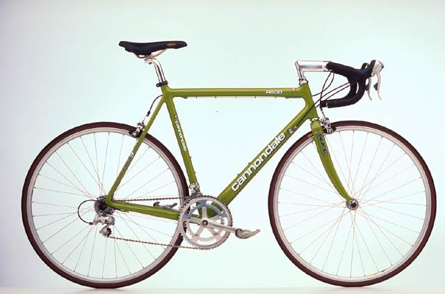
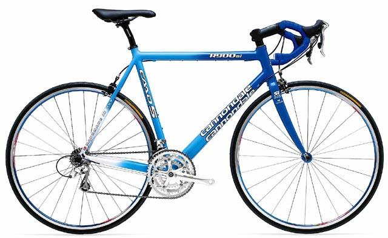
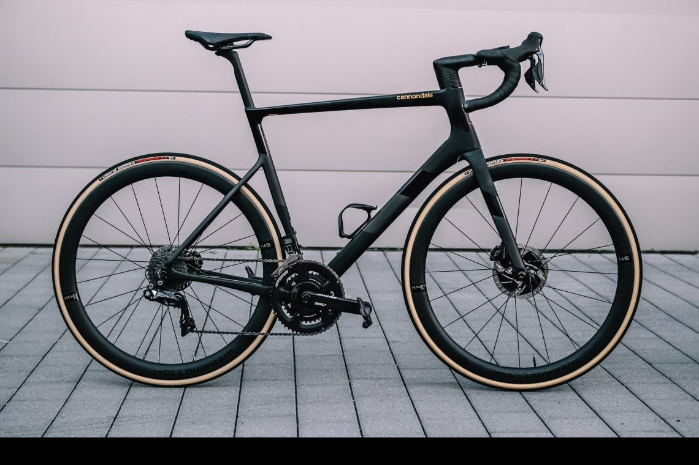
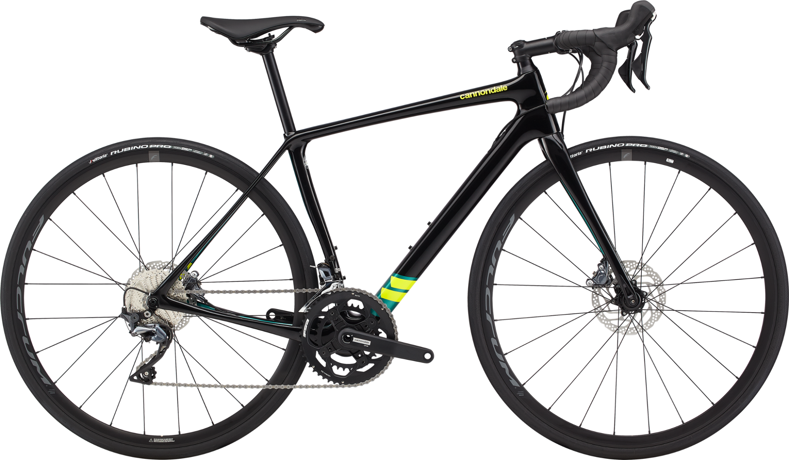

Merk
Cannondale is een Amerikaans merk van mountainbikes en racefietsen opgericht in 1971 door Joe Montgomery.
Ivan Gotti won de Giro (1997) op een Cannondale CAAD 3. In 2004 introduceerde Cannondale het superlichte SIX13 carbon frame.
Cannondale is een Amerikaans merk van mountainbikes en racefietsen opgericht in 1971 door Joe Montgomery.
Ivan Gotti won de Giro (1997) op een Cannondale CAAD 3. In 2004 introduceerde Cannondale het superlichte SIX13 carbon frame.
| Model | Geschiedenis |
|---|---|
|  Cannondale R600 |
Cannondale was één van de eerste met aluminium frames met een groot volume, in een tijd waarin alleen stalen frames werden geproduceerd en aluminium met de hand werd gemaakt in kleine hoeveelheden. De frames waren beschikbaar in twee kleuren; rood en wit, met DuPont Imron verf. Deze R600 komt uit het jaar 1990, het frame is van aluminium en heeft een grote onderbuis en vergrote balhoofdbuis. In tegenstelling tot stalen frames waren er geen nokken; de aluminium buizen werden verstek, met de hand gelast. Cannondale bracht de daaropvolgende frames op de markt met CAAD-aanduiding ("Cannondale Advanced Aluminium Design"). Het CAAD4-model introduceerde S-bocht aluminium stoelsteunen voor beter comfort. Optimo aluminium, een legering uit de 6000-serie, dit werd in 2002 op de markt gebracht met het CAAD7 frame. De Optimo's bevatten een eigen mix iets meer silicium en minder magnesium, voor een hogere treksterkte en een betere rek. |
|  Cannondale R900 CAAD8 |
Dit specifieke Cannonadele model komt uit 2002. Een bijzonder stijf frame. De ontwikkeling van CAAD4 naar CAAD9, waar echte veranderingen werden aangebracht om de stijfheid te vergroten. Cannondale begon ook de CAAD7 te veranderen van een 43 mm vork naar een 45 mm vork, de framehoeken bleven hetzelfde. De CAAD7 en CAAD8 hebben minder gewicht zadelbladen, met ronde buizen, maar behielden de zandlopervorm. Ze gingen ook van een ronde onderbuis op de HT-kruising naar een druppelvormige, vermoedelijk om de rijkwaliteit te verbeteren. De CAAD7 was het laatste aluminium frame dat beschikbaar was in de VS met de optie SI trapas; Europese CAAD8 SI-fietsen waren beschikbaar. |
|  Cannondale SuperSix 2020 |
Het Six13-model, dat in 2004 werd geïntroduceerd, gebruikte koolstofbuissecties in de hoofddriehoek en maakt nog steeds gebruik van aluminium achterste driehoeken. Deze opstelling is in tegenspraak met de gebruikelijke industriële praktijk van het gebruik van carbon inzetstukken en aluminium driehoekige buizen aan de voorzijde. De Union Cycliste Internationale heeft een minimumgewichtslimiet van 6,8 kg (14,97 lb) vastgesteld. Cannondale adverteerde deze lichtgewicht frameset met de slogan "Legalize my Cannondale". In werkelijkheid heeft alleen de kleinste fietsmaat (50 cm) de limiet van 6,8 kg bereikt. Sommigen in de fietsindustrie beschouwden dit als een marketing stunt, omdat Six13-frames hetzelfde wogen als, of meer dan, concurrerende frames van andere fabrikanten. |
|  Cannondale Synapse 2020 |
De Synapse is een racefiets die licht, stijf, snel en verrassend comfortabel is. De endurance Race Geometry positioneert je vooruit om hard te gaan, maar rechtop om lang te gaan, plus een afneembare zitstagbrug en verborgen spatbordbevestigingen houden je op elke weg, in elk weer. Verbonden en beveiligd SAVE micro-ophangingstechnologie in het frame en de vork isoleert u tegen stoten terwijl u verbonden blijft met de weg. Betere bediening en controle, met het comfort om de hele dag te rijden. Licht genoeg om snel te klimmen en stijf genoeg om te sprinten dankzij het asymmetrische ontwerp, de verfijnde buisvormen en de gekozen koolstoflaag. |